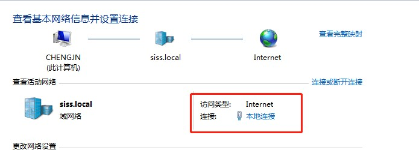
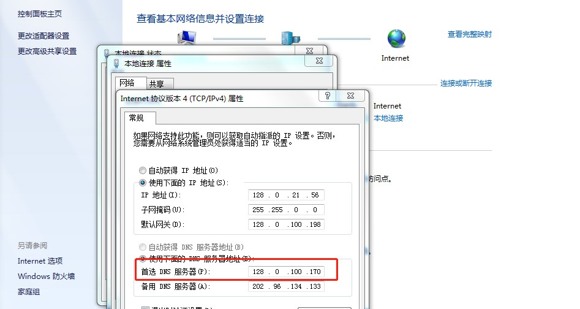
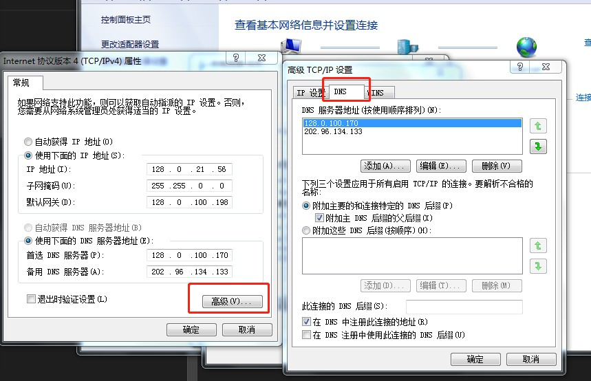
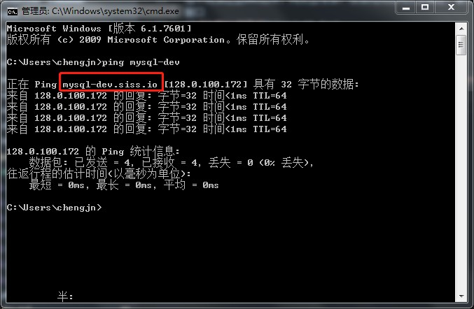

1. 本地开发环境基础服务支持使用DNS设置方法
1.1. 修改Windows设置
进入控制面板---->网络连接--->本地连接

在弹出的菜单中，点击属性按钮
弹出的菜单中，先选中Internet协议版本4---再点击属性
将首选DNS修改为128.0.100.170 
再点击高级按钮,弹出的对话框切换到DNS选项卡，如下图所示 
选中附加这些DNS后续，再点击添加。添加完成后再点击确定，最后依次关闭当前窗口
1.2. 测试
打开终端命令行窗口，执行ping mysql-dev,应该会自动将mysql-dev转换为mysql-dev.siss.io该域名，并正确返回IP地址

附: 开发环境信息